STAGE 04 · WORK
기획부터 배포까지,
직접 만든 6개의 프로젝트
AI+X 과정에서 설계한 팀 프로젝트부터 실제 현장에서 운영 중인 서비스까지 — 직접 설계하고 구현한 프로젝트입니다.
AI+X COURSE PROJECTS
교육 과정에서 설계하고 구현한 프로젝트

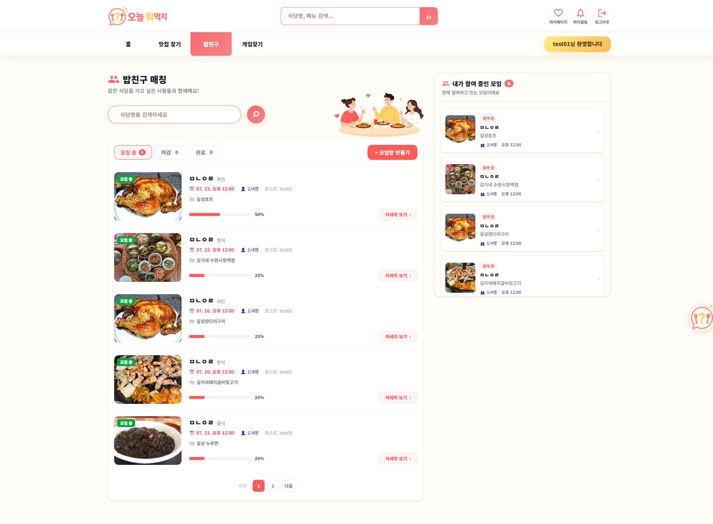

PROJECT 01
오늘 뭐먹지? — 생성형 AI Web App
팀 프로젝트 · 팀장 · Backend Lead5인 팀의 팀장으로서 백엔드 개발과 전반적인 진행 상황을 조율하며, OpenAI 챗봇 기반 맛집·메뉴 추천 서비스를 만들었습니다.
- 팀장으로서 백엔드 개발 및 전체 일정 조율
- AI가 추천하는 오늘의 맛집 · 메뉴
- 밥친구 매칭(파티) 및 Q&A 챗봇 구현
배운 점 — 서비스를 실제로 운영하며 마주친 DB 드라이버 호환성 오류, 배포 인프라 한계를 하나씩 해결하며, 기능을 만드는 것과 서비스를 운영하는 것은 다른 문제라는 걸 배웠습니다.
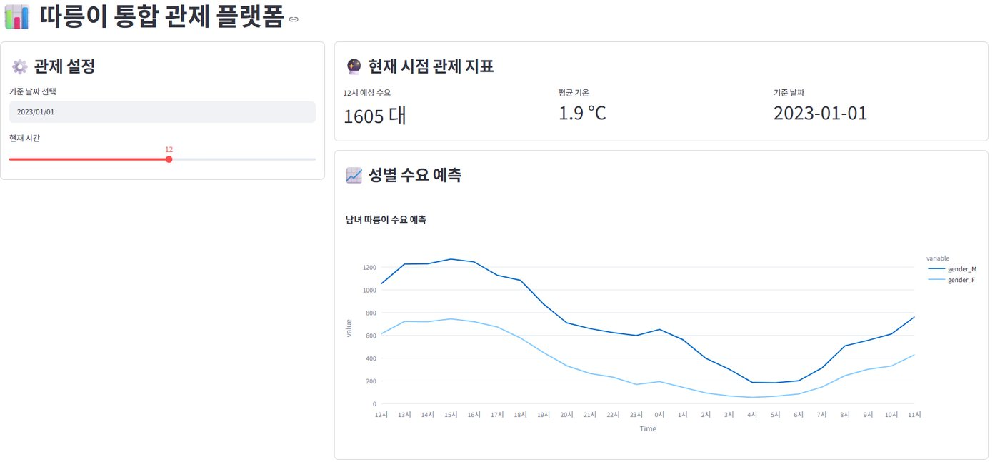
PROJECT 02
따릉이 통합 관제 플랫폼
팀 프로젝트서울·런던·뉴욕 3개 도시의 공공자전거 데이터를 비교 분석해 2026년 수요를 예측하는 딥러닝 기반 관제 대시보드입니다.
- 서울 · 런던 · 뉴욕 데이터 비교 분석
- 딥러닝 모델 비교 및 2026년 수요 예측
- Streamlit(Hugging Face Spaces) 대시보드 배포
배운 점 — 도시마다 다른 데이터 구조를 하나의 학습 데이터로 통합하는 과정이 가장 어려웠습니다. 컬럼을 맞추고 결측치를 성장률 기반으로 보간하면서, 모델 성능만큼 데이터를 다루는 과정 자체가 중요하다는 걸 배웠습니다.
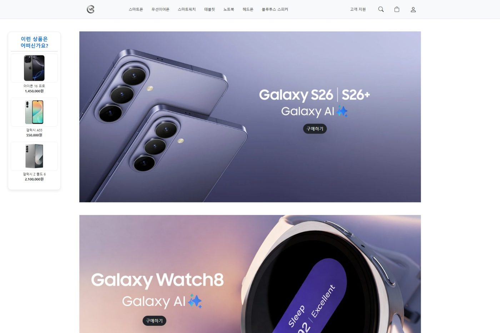
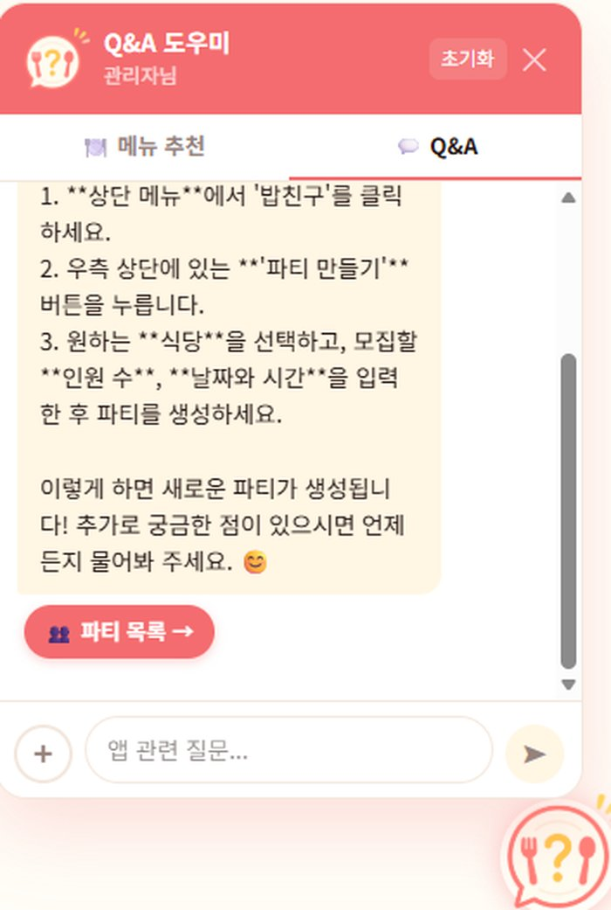
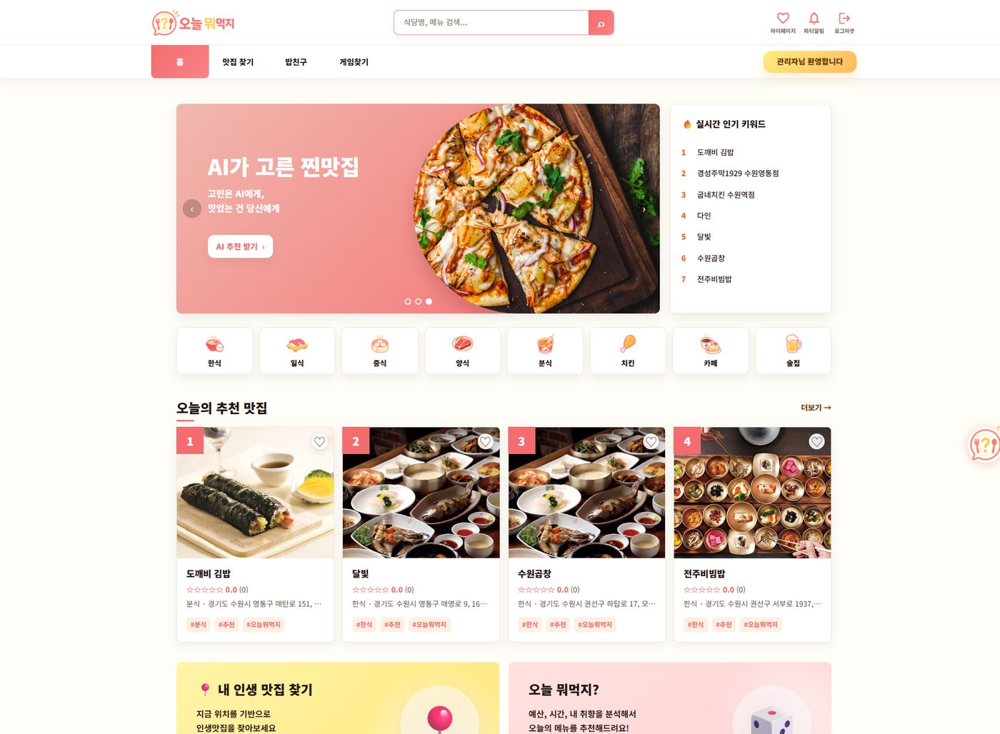
PROJECT 03
ConnectShop — Flask 웹 서비스
팀 프로젝트 · Backend 중심Flask와 SQLAlchemy로 백엔드 전반을 설계하고, 로그인부터 결제·게시글 관리까지 커머스 서비스의 핵심 흐름을 구현했습니다.
- 로그인 · 회원가입 · 마이페이지 구현
- 멤버십 결제 연동
- 장바구니 연동 및 게시글 작성 · 수정 기능
배운 점 — 장바구니와 결제처럼 상태가 계속 바뀌는 기능을 다루며 데이터와 상태를 함께 관리하는 방법을 배웠습니다. 서비스 하나를 완성하려면 화면 하나보다 훨씬 많은 흐름을 고려해야 한다는 것도 체감했습니다.
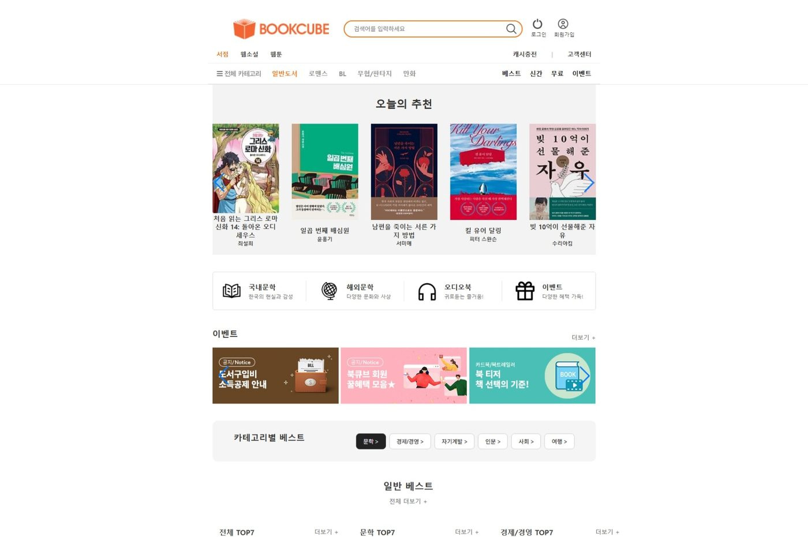
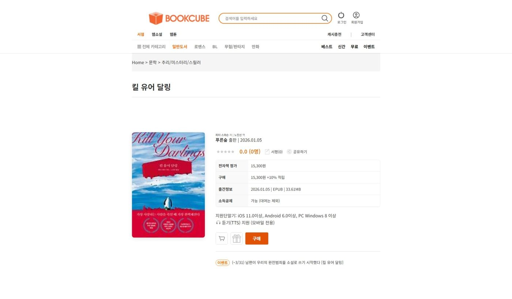
FIELD PROJECTS
현장에서 직접 운영 중인 서비스
자영업 현장의 실제 문제를 직접 풀기 위해 만들고, 지금도 매일 쓰고 있는 서비스입니다.
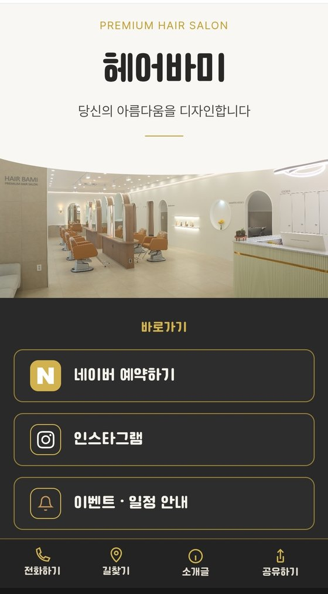
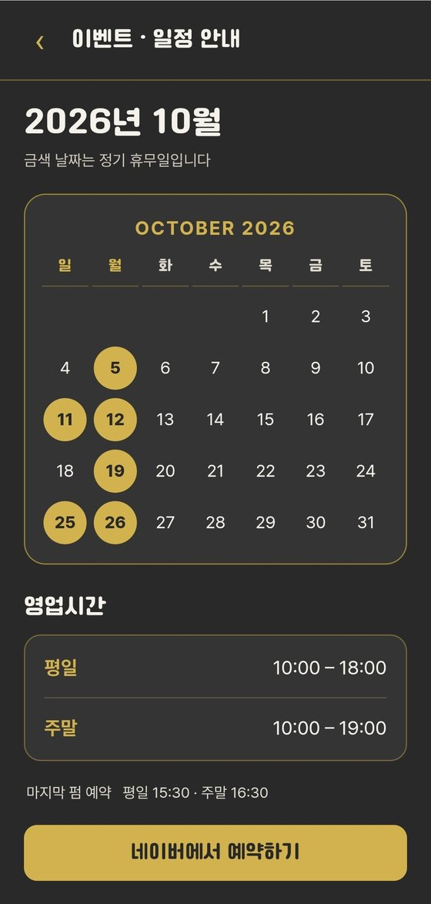
PROJECT 05
HAIR BAMI — 살롱 모바일 홈페이지
개인 프로젝트 · 실제 매장 운영 중매장 QR로 접속하는 미용실 모바일 원페이지입니다. 예약 · 상담 · 길찾기 · 제품 안내를 한 화면에 모아, 고객이 정보를 찾느라 헤매지 않고 바로 예약까지 이어지도록 만들었습니다.
- 네이버 예약 · 인스타그램 · 카카오톡 채널 1:1 상담 바로가기
- 정기 휴무일 달력, 영업시간, 마지막 펌 예약 시간을 한 화면에 안내
- 제품별 인터넷 최저가 · 매장가 비교 모달 — 차액을 막대 그래프로 표시
- 하단 고정 메뉴(전화 · 네이버 지도 길찾기 · 소개글 · 공유) — 공유는 Web Share API, 미지원 시 링크 복사
- 공지 · 이벤트 · 제품 정보를 설정 객체 한 곳에 모아 코드를 몰라도 내용 교체 가능
배운 점 — 고객이 매장에 가장 자주 묻는 예약 · 위치 · 영업시간을 첫 화면에 배치하면서, 화려한 기능보다 사용자가 찾는 정보를 가장 빨리 보여주는 것이 좋은 UX라는 걸 체감했습니다. 직접 운영하는 페이지라 바뀌는 정보만 한 곳에 모아 두는 구조가 유지보수에 얼마나 중요한지도 배웠습니다.
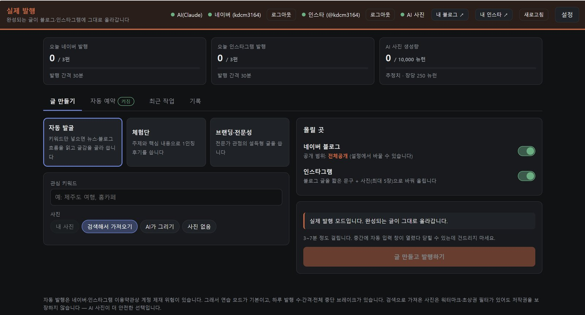
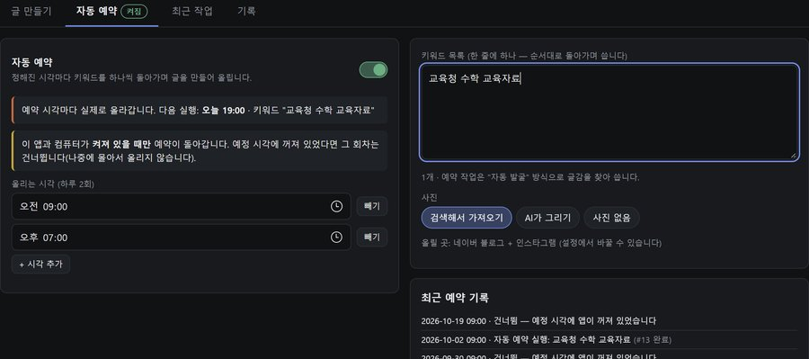
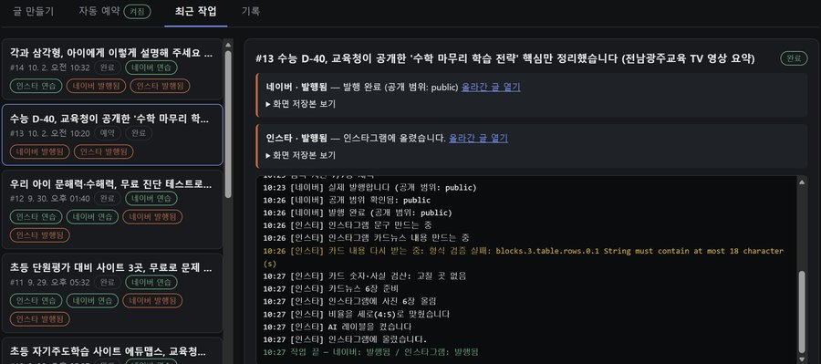
PROJECT 06
블로그 · 인스타그램 콘텐츠 자동 발행
개인 프로젝트 · 실제 운영 중키워드 하나만 넣으면 뉴스·블로그 흐름을 읽고 글감을 골라, Claude가 글을 쓰고 네이버 블로그와 인스타그램에 실제로 발행까지 하는 로컬 웹앱입니다. API 종량 과금 대신 구독형 AI CLI를 자식 프로세스로 호출하도록 설계했습니다.
- 글쓰기 모드 3종 — 자동 발굴 · 체험단 후기 · 브랜딩/전문성 글
- Playwright로 네이버 스마트에디터 · 인스타그램 게시 자동화 (4:5 비율, 페이스북 동시 공유 차단)
- 인스타 카드뉴스는 HTML로 그려 1080×1350 이미지로 촬영 — AI 그림의 한글 깨짐 회피
- 카드 속 숫자 · 공식 · 단위를 BigInt 분수 계산기로 직접 검산, 통과해야 "✔ 검산 완료"
- 자동 예약 · 연습 모드 · 하루 발행 수/간격 가드 · 로컬 전용 접속과 Origin 검사
배운 점 — AI가 만든 결과를 그대로 믿지 않고, 형식 검증에 실패하면 다시 받고 숫자·사실을 한 번 더 검산하는 단계를 넣었습니다. 실제 계정에 올라가는 서비스일수록 생성보다 검증과 안전장치 설계가 더 중요하다는 걸 배웠습니다.